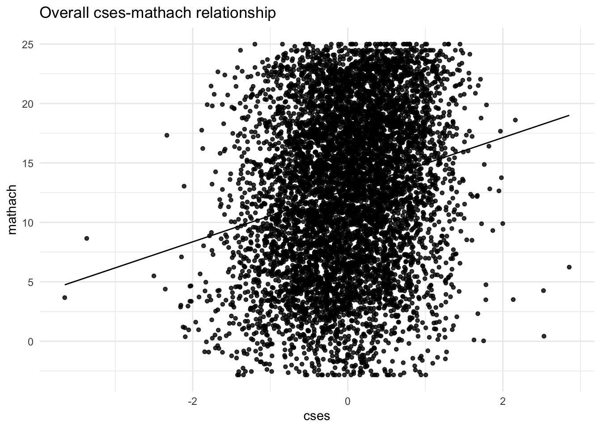
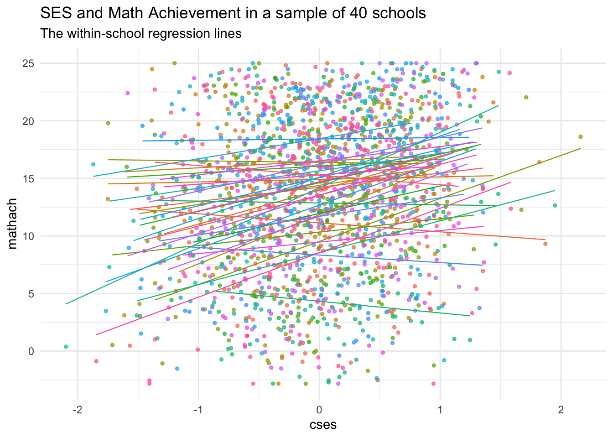
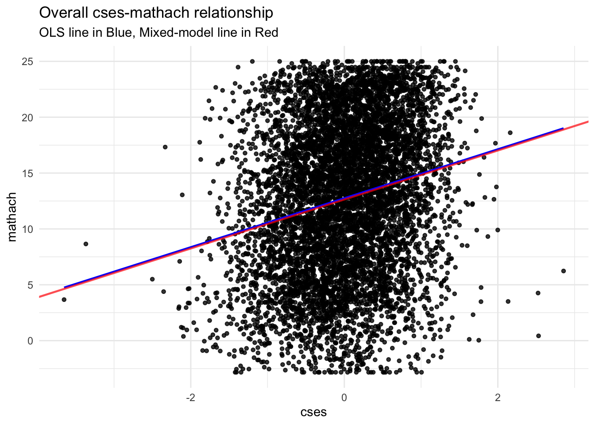
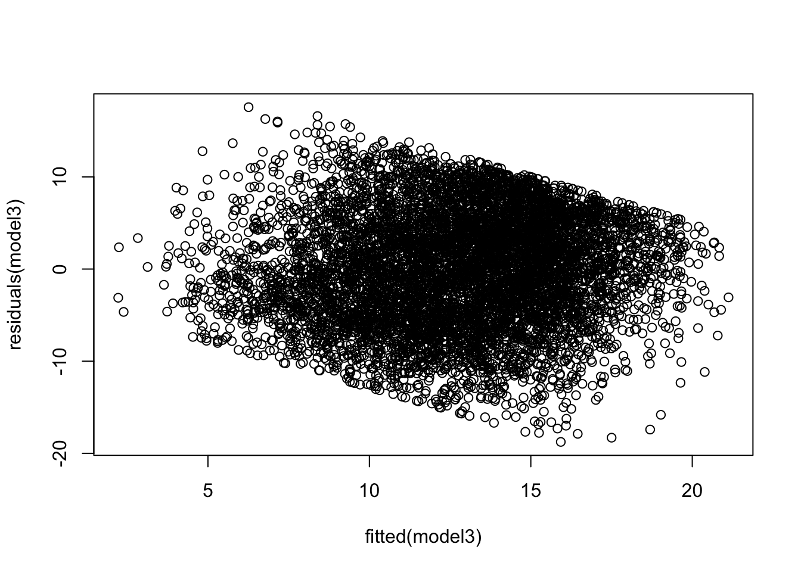

8 More on Hierarchical Linear Models
8.1 Overview
In part 1, we covered the One-way ANOVA with random effects and Means as Outcomes models from Raudenbush and Bryk. This week, we cover the remaining models with an aim to reconstruct the results from pages 75-86 in their book.
This vignette makes use of some great code by Rens van de Schoot
8.2 Random Coefficients model
To remind you, this model is a two-level model, with a predictor at level 1 (group-centered-SES or cses in our data set), and the outcome also at level 1 (mathach).
The purpose of this model is truly multilevel: you want to know about an overall average effect of a level-1 predictor across groups, but also about how variable that effect is across the groups.
Here, we’re asking what is the average effect of cses on math achievement across schools, and by how much does it vary from school to school. Later, we’ll ask whether variables at the school level relate to the slope variation.
Level 1:
\[ Y_{ij} = \beta_{0j} + \beta_{1j}(cses) + r_{ij} \] Level 2: \[ \begin{aligned} \beta_{0j} = \gamma_{00} + u_{0j} \\ \beta_{1j} = \gamma_{11} + u_{1j} \end{aligned} \]
8.2.1 Visualizing the within-school slopes
To get a sense of what we’re doing, let’s first visualize the mathach ~ cses relationship without respect to school.
Below is an overall plot of all \(n = 7185\) students’ cses and math achievement scores. It looks pretty incoherent. Given the known hierarchical structure of the data, this is not surprising, so we should try to understand what’s happening within each school and between schools.
However, we still see that, ignoring the clustering, there’s some degree of linear relationship between a student’s SES and his or her math achievement score.

Now, let’s zoom in on a few schools and see if there are some differences in the cses relationship across them. To make it easier to see, we’ll sample \(J = 40\) schools and plot a regression line for each:
schools <- sample(HSB$school, 40)
Sampledata <- HSB[is.element(HSB$school,schools), ]
ggplot(data = Sampledata, aes(x = cses, y = mathach, col = school, group = school)) +
geom_point(size = 1, alpha = .7, position = "jitter") +
theme_minimal() +
theme(legend.position = "none") +
geom_smooth(method = lm,
se = FALSE,
linewidth = .4,
alpha = .7) + # to add regression line
labs(title = "SES and Math Achievement in a sample of 40 schools",
subtitle = "The within-school regression lines")
We can see that most of the lines have positive slope, but there are a few that do not!
The random coefficients model focuses on two things:
- An overall average estimate across these regression equations
- \(\gamma_{00} =\) weighted average of \(\beta_{0j}\) the school-level regression intercepts
- \(\gamma_{10} =\) the weighted average of \(\beta_{1j}\) the school-level slopes for the
cses~mathachrelationship
- The estimated variability across schools in \(\beta_{0j}\) and \(\beta_{1j}\)
- Since our equations for the gammas include a random effect of each school, we can obtain variability estimates by working with these random effects \(u_{0j}\) and \(u_{1j}\)
Note: we’re not attempting to “explain” why schools have different intercepts and slopes, so \(u_{0j}\) and \(u_{1j}\) for each school are simply the amount by which that school differs from the mean intercept (\(\gamma_{00}\)) and mean slope (\(\gamma_{01}\)), respectively. They’re essentially level-2 error terms.
8.2.2 Fitting the Random Coefficients 2-level model
Substituting the leve-2 equations above into the level 1 equation with cses as the level-1 predictor, mathach as outcome, and both random intercepts (\(\beta_{0j}\)) and slopes (\(\beta_{1j}\)) we get:
\[ Y_{ij} = \gamma_{00} + \gamma_{10}(cses) + u_{0j} + u_{1j}(cses) + r_{ij} \]
So that means, our mixed-effects output should contain estimates of 2 fixed effects:
- \(\gamma_{00}\), the weighted average intercept across schools (scaled to be the grand mean)
- \(\gamma_{10}\), the weighted average
cses-mathachslope across schools
Note that we do not estimate \(\beta_{0j}\) or \(\beta_{1j}\) directly, but they can be computed. Generally, that’s not our goal, but we could use these estimates for data in other analyses
We get estimates of the variances of 3 random effects
- \(\text{Var}(u_{0j}) = \tau_{00}\)
- \(\text{Var}(u_{1j}) = \tau_{11}\)
- \(\text{Var}(r_{ij}) = \sigma^{2}\)
AND we have a new term, a covariance between \(u_{0j}\) and \(u_{1j}\)
- \(\text{Cov}(u_{0j},u_{1j}) = \tau_{10}\)
Let’s now estimate our mixed-effects parameters
## Linear mixed model fit by REML ['lmerMod']
## Formula: mathach ~ cses + (cses | school)
## Data: HSB
##
## REML criterion at convergence: 46714.2
##
## Scaled residuals:
## Min 1Q Median 3Q Max
## -3.09680 -0.73193 0.01855 0.75386 2.89924
##
## Random effects:
## Groups Name Variance Std.Dev. Corr
## school (Intercept) 8.681 2.9464
## cses 0.694 0.8331 0.02
## Residual 36.700 6.0581
## Number of obs: 7185, groups: school, 160
##
## Fixed effects:
## Estimate Std. Error t value
## (Intercept) 12.6362 0.2445 51.68
## cses 2.1932 0.1283 17.10
##
## Correlation of Fixed Effects:
## (Intr)
## cses 0.009For inference, we’ll use bootstrapped confidence intervals:
## 2.5 % 97.5 %
## .sig01 2.5968018 3.2927604
## .sig02 -0.3022129 0.4414194
## .sig03 0.4346349 1.1285269
## .sigma 5.9544060 6.1672046
## (Intercept) 12.1208481 13.1124875
## cses 1.9523704 2.4369979Here’s a graph showing the difference between a hierarchical model and an OLS regression line.

8.2.3 Adding additional level-1 predictors to the random coefficients model
We can add as many level-1 predictors as we like. If we want to also model the level-1 slopes for these predictors as random, we need to change how our random-effects syntax looks. It is very similar to the combined equation though:
## boundary (singular) fit: see help('isSingular')We may have a singular fit issue, but we’ll ignore it. This happens when variance components are close to zero, the boundary of the parameter space.
The combined equation from the above model is:
Model equation: \[ Y_{ij} = \gamma_{00} + \gamma_{10}(cses) + \gamma_{20}(minority = \text{Yes}) + u_{0j} + u_{1j}(cses) + u_{2j}(sex) + r_{ij} \]
Here’s our results. Note the new rows in the Random Effects part of the output and how small the cses variance is. The correlation between csesslopes and the school (Intercept) is also estimated to be \(-1.0\) which is likely another cause of the warning.
## Linear mixed model fit by REML ['lmerMod']
## Formula: mathach ~ cses + minority + (cses + minority | school)
## Data: HSB
##
## REML criterion at convergence: 46503.4
##
## Scaled residuals:
## Min 1Q Median 3Q Max
## -3.13665 -0.71773 0.03569 0.75813 2.98894
##
## Random effects:
## Groups Name Variance Std.Dev. Corr
## school (Intercept) 5.8580 2.4203
## cses 0.0114 0.1068 -1.00
## minorityYes 1.9527 1.3974 0.30 -0.30
## Residual 35.9143 5.9929
## Number of obs: 7185, groups: school, 160
##
## Fixed effects:
## Estimate Std. Error t value
## (Intercept) 13.5218 0.2134 63.35
## cses 1.9047 0.1092 17.44
## minorityYes -3.1596 0.2515 -12.56
##
## Correlation of Fixed Effects:
## (Intr) cses
## cses -0.111
## minorityYes -0.108 0.123
## optimizer (nloptwrap) convergence code: 0 (OK)
## boundary (singular) fit: see help('isSingular')Not only do we have a new variance (\(\text{Var}(u_{2j}) = \tau_{22}\)), we have two new covariances, in fact, we have a 3 by 3 variance-covariance matrix \(\textbf{T}\):
\[ \begin{bmatrix} \tau_{00} &. &. \\ \tau_{10} &\tau_{11} &. \\ \tau_{20} &\tau_{21} &\tau_{22} \end{bmatrix} \] The lower triangle (including the diagonal terms) are the only unique terms here. The diagonal lists the 3 random effect variances (of the random intercept, cses slope, and sex slopes in that order). The other entries are the covariances between those 3 terms. For example, \(\tau_{10}\) is the covariance between the random effect \(u_{0j}\) and \(u_{1j}\)
In the output from r, we only get this lower triangle including \(\tau_{10}\), \(\tau_{20}\), and \(\tau_{21}\). The variances are given in the variance column, along with \(\sigma^{2}\) which is the variance of the level-1 residuals (\(r_{ij}\))
Finally, we can ask how much variance at level-1 we’ve reduced by adding minority as
a level 1 predictor. We can use the CSES model as the comparison.
## [1] 0.02152589So despite the average slope for minority being significantly different from zero, we haven’t explained much more variance by adding it.
8.3 Intercepts and Slopes as Outcomes
We now illustrate the Intercepts-and-slopes-as-outcomes model. We will fit exactly what appears in Raudenbush & Bryk, Chapter 4, but note, we can include more predictors at each level if we wish.
Let’s look at the hierarchical model:
- Level 1
- \(Y_{ij} = \beta_{0j} + \beta_{1j}(cses_{ij}) + r_{ij}\)
- Level 2
- \(\beta_{0j} = \gamma_{00} + \gamma_{01}(mean.ses_{j}) + \gamma_{02}(Sector_{j}) + u_{0j}\)
- \(\beta_{1j} = \gamma_{10} + \gamma_{11}(mean.ses_{j}) + \gamma_{12}(Sector_{j}) + u_{1j}\)
So we know we have 3 predictor variables:
csesat level 1mean.sesat level 2Sector, which is an indicator forCatholicat level 2
8.3.1 Interactions and the ISO model
The combined model for the above includes interactions. This is due to the fact that when we substitute the level 2 equation for \(\beta_{1j}\) into the level 1 equation, the entire level 2 equation is multiplied by \(cses_{ij}\) so we have:
\[ Y_{ij} = [\gamma_{00} + \gamma_{01}(mean.ses_{j}) + \gamma_{02}(Sector_{j}) + u_{0j}] + [cses \times (\gamma_{10} + \gamma_{11}(mean.ses_{j}) + \gamma_{12}(Sector_{j}) + u_{1j})] + r_{ij} \]
In the first bracket above, we have the substitution of \(\beta_{0j}\) with the level-2 equation for it. Since \(\beta_{0j}\) is the intercept, and not multiplied by anything, these terms just add right in.
However, in the second set of brackets, we see that the equation for \(\beta_{1j}\) gets multiplied by the level-1 predictor \(cses_{ij}\) because that’s how it’s written at level 1. Multiplying through we have
\[ Y_{ij} = [\gamma_{00} + \gamma_{01}(mean.ses_{j}) + \gamma_{02}(Sector_{j}) + u_{0j}] + [(cses \times\gamma_{10}) + (cses \times \gamma_{11}(mean.ses_{j})) + (cses \times \gamma_{12}(Sector_{j}))+ (cses \times u_{1j})] + r_{ij} \]
Rearranging our terms we see that the first 4 fixed effects (including the intercept) are
not interactions, the next 2 are, and then we have the random part. Note that in the random part
there is an interaction between \(cses\) and \(u_{ij}\) but lmer specifies this for us.
\[ Y_{ij} = \gamma_{00} + \gamma_{01}(mean.ses_{j}) + \gamma_{02}(Sector_{j}) + \gamma_{10}(cses) + \gamma_{11}(mean.ses_{j} \times cses) + \gamma_{12}(Sector_{j} \times cses)+ u_{0j} + u_{1j}(cses) + r_{ij} \]
So we insert the fixed effects into the lmer formula, and then specify random cses slopes
as with the random coefficients model (cses|school) and lmer takes care of the rest.
Note: You can use * or : for interaction terms, but the * is better here as it will build the necessary terms for you without duplication or omission. Using : you would need to specify each term in the equation. See below (mod4alt):
# using the * operator for interactions
mod4 <- lmer(mathach ~ cses*mean.ses + cses*sector + (cses | school), data = HSB)
# alternate specification forming interaction terms "by hand" with ":"
mod4alt <- lmer(mathach ~ cses + mean.ses + sector + cses:mean.ses + cses:sector +
(cses|school), data = HSB)In the output, we can see that, indeed, we have the correct interaction variables in the model. Now, what do they mean?
## Linear mixed model fit by REML ['lmerMod']
## Formula: mathach ~ cses * mean.ses + cses * sector + (cses | school)
## Data: HSB
##
## REML criterion at convergence: 46503.7
##
## Scaled residuals:
## Min 1Q Median 3Q Max
## -3.15926 -0.72319 0.01704 0.75444 2.95822
##
## Random effects:
## Groups Name Variance Std.Dev. Corr
## school (Intercept) 2.380 1.5426
## cses 0.101 0.3179 0.39
## Residual 36.721 6.0598
## Number of obs: 7185, groups: school, 160
##
## Fixed effects:
## Estimate Std. Error t value
## (Intercept) 12.1279 0.1993 60.856
## cses 2.9450 0.1556 18.928
## mean.ses 5.3329 0.3692 14.446
## sectorCatholic 1.2266 0.3063 4.005
## cses:mean.ses 1.0393 0.2989 3.477
## cses:sectorCatholic -1.6427 0.2398 -6.851
##
## Correlation of Fixed Effects:
## (Intr) cses men.ss sctrCt css:m.
## cses 0.075
## mean.ses 0.256 0.019
## sectorCthlc -0.699 -0.053 -0.356
## cses:men.ss 0.019 0.293 0.074 -0.026
## css:sctrCth -0.052 -0.696 -0.027 0.077 -0.3518.3.2 Mean SES and Student SES
The cses:mean.ses term in the model is positive, and has a t-value that is likely significant (3.477). This means that the student ses relation to math achievement gets more positive as the school’s average SES increases. So schools with a higher mean SES tend to have stronger student-level ses effects on math achievement. This is true because the marginal cses slope is positive, so the positive interaction term adds to the already positive slope.
8.3.3 Sector and Student SES
In contrast, the cses:sectorCatholic term in the model is negative, but with a large t-value, which is also likely significant. It tells us that on average, Catholic schools have slopes that are -1.6427 less than Public schools. So the effect of student-level ses on math achievement is weaker in Public Schools, but still net positive on average.
8.3.4 Visualizing the mean SES effect
To understand the interaction between mean.ses and cses, it’s helpful to split Mean SES into categories and plot the different schools. We do this using the cut command.
In cut we specify breaks = 3 to just let R pick 3 equally spaced categories that we name
low, average, and high ses. There are better ways to do it, but this is a nice quick and dirty method
As before, we will use the ggplot2 package to make the graphs. Consult Hadley Wickham’s e-Book Chapter 3 for an introduction to the syntax.
Note, I am colorblind so I’m using this (rather ugly) colorblind palette, which is just a collection of hex codes for colors that have good contrast.
cbbPalette <- c("#000000", "#E69F00", "#56B4E9", "#009E73", "#F0E442", "#0072B2", "#D55E00", "#CC79A7")
ggplot(data = HSB, aes(x = cses, y = mathach, col = mean.ses.cat, group = school)) +
#geom_point(size = 1, alpha = .7, position = "jitter") +
theme_bw() +
scale_color_manual(values = cbbPalette[1:3]) +
geom_smooth(method = lm,
se = FALSE,
linewidth = .4,
alpha = .7) + # to add regression line
labs(title = "SES and Math Achievement",
subtitle = "The within-school regression lines colored by MeanSES")## `geom_smooth()` using formula = 'y ~ x'
As can be seen, there is a clear difference in the slopes across the 3 categories of Mean SES. Note that in this way, we’re really seeing the multilevel part in action. We have 2 sample levels, one of the 7185 students, and now we can see that the 160 schools make up a second (random) sample. This random sample has systematic components, one of them being Mean SES. But instead of just looking at the relation between this level-2 systematic component and a measurement, we looking at the relationship between the level-2 systematic component and the strength of a level-1 relationship.
8.4 Model comparison with Likelihood Ratios: Fixed and Random
As noted in lecture, there are some issues with p-values from likelihood ratio tests (LRTs) when we have dependent data:
- The LRTs for fixed effects (using
REML = FALSE) can be too small and inflate Type I error - The LRT for random effects (using
REML = TRUE) can be too big inflating Type II error
These are really only issues for model building: deciding on the fixed or random components of your final model. In the final model, you can use the bootstrapped confidence intervals
8.4.1 Example 1: LRT for fixed effects
Let’s say we want a p-value for the minority effect in model 3a. We could fit a model without minority and use anova to compute the LRT \(p\)-value, but we’ll run into two problems
- Model 3a has a random slope for
minority, and so there is no way to fit a model without sex as a predictor, but allowing for random slopes - We may find the \(p\) value is too small since the \(\chi^{2}\) approximation is not exact
Let’s see what happens in a simpler situation: a random intercept model
mod3_int <- lmer(mathach ~ cses + minority + (1 | school), data =HSB)
mod3_int_null <- lmer(mathach ~ cses + (1 | school), data =HSB)
anova(mod3_int_null, mod3_int)## refitting model(s) with ML (instead of REML)## Data: HSB
## Models:
## mod3_int_null: mathach ~ cses + (1 | school)
## mod3_int: mathach ~ cses + minority + (1 | school)
## npar AIC BIC logLik -2*log(L) Chisq Df Pr(>Chisq)
## mod3_int_null 4 46728 46756 -23360 46720
## mod3_int 5 46523 46557 -23256 46513 207.34 1 < 2.2e-16 ***
## ---
## Signif. codes: 0 '***' 0.001 '**' 0.01 '*' 0.05 '.' 0.1 ' ' 1There is a significant reduction in the deviance for the model with minority but it may not be exact. Below is the code to run a parametric bootstrapped likelihood ratio test. Note, it can take quite a while to run (and actually prints out how long in the output):
## Bootstrap test; time: 42.41 sec; samples: 1000; extremes: 0;
## large : mathach ~ cses + minority + (1 | school)
## stat df p.value
## LRT 207.34 1 < 2.2e-16 ***
## PBtest 207.34 0.000999 ***
## ---
## Signif. codes: 0 '***' 0.001 '**' 0.01 '*' 0.05 '.' 0.1 ' ' 1So this tells us that under a null model, there only \(0.09 \%\) of samples returned LRT statistics greater than \(207.34\). That means that our \(LR = 207.34\) is NOT compatible with the null, so we should reject it: minority IS significant.
8.4.2 Example 2: LRT for random effects
Similarly, we might want to test if the variance of the cses slopes is greater than 0. model3 is the full model, and we fit a reduced model and test it:
## Data: HSB
## Models:
## mod3_null: mathach ~ cses + (1 | school)
## model3: mathach ~ cses + (cses | school)
## npar AIC BIC logLik -2*log(L) Chisq Df Pr(>Chisq)
## mod3_null 4 46732 46760 -23362 46724
## model3 6 46726 46768 -23357 46714 9.7617 2 0.007591 **
## ---
## Signif. codes: 0 '***' 0.001 '**' 0.01 '*' 0.05 '.' 0.1 ' ' 1Again, we see evidence of a significant reduction in deviance when we allow for random slopes. Again, this can be too conservative. We omit the pbkrtest results since they take quite a while and have some convergence issues due to the small scale of the variance in the \(\beta\)’s for cses across schools.
What you might do in this situation is reason that the risk in testing random effects is that the p-value is conservative, and since it’s still well below \(\alpha = 0.05\) you might accept this result.
8.5 Diagnostics
In our final section, we will quickly illustrate how to produce some residual plots to examine whether assumptions have been violated.
Our aim is to simply examine the residuals to see if they indeed follow a normal distribution. We do this at both levels:
- Level 1: \(r_{ij} \sim \mathcal{N}(0,\sigma^{2})\)
- Level 2: \(u_{qj} \sim \mathcal{N}(0,\tau_{qq})\)
We’ll look at model 3 with random intercepts and slopes for cses
At level 1:


At level 2, we will simply see if the distribution is Normal. We do this for both the random intercepts and random slopes
ranef3 <- ranef(model3)
## QQ plot of the Intercept random effects
qqnorm(ranef3$school$`(Intercept)`)

We see in each case, we have nicely behaved results